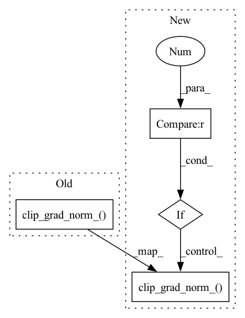

Pattern ID :36805
Before Change
loss.backward()
// gradient clipping
torch.nn.utils.clip_grad_norm_( self.modules.parameters(), 5.0)
self.optimizer.step()
self.optimizer.zero_grad()
stats["loss"] = loss.detach()After Change
if not hasattr(self, "step"):
self.step = 0
self.step = self.step + 1
if self.step % params.gradient_accumulation == 0 :
// gradient clipping
torch.nn.utils.clip_grad_norm_( self.modules.parameters(), 5.0)
self.optimizer.step()
self.optimizer.zero_grad()
In pattern: SUPERPATTERN
Frequency: 3
Non-data size: 4
Instances Fragment ID: 104978087
Project Name: speechbrain/speechbrain
Commit Name: 34c1b22b252b931a13183617f0c003f60978f69a
Time: 2020-07-29
Author: jianyuan.zhong@server.mila.quebec
File Name: recipes/LibriSpeech/ASR_transformer/experiment.py
M Class Name: ASR
N Class Name: ASR
M Method Name: fit_batch(2)
N Method Name: fit_batch(2)
M Parent Class: sb.core.Brain
N Parent Class: sb.core.Brain
M File Name: recipes/LibriSpeech/ASR_transformer/experiment.py
N File Name: recipes/LibriSpeech/ASR_transformer/experiment.py
M Start Line: 226
M End Line: 233
N Start Line: 225
N End Line: 243
Before Change
def _clip_grads(self, params, cfg):
params_with_grad = filter(
lambda p: p.requires_grad and p.grad is not None, params)
clip_grad.clip_grad_norm_( params_with_grad, **cfg)
def before_train_epoch(self, engine):
self._last_update_iter = 0
engine.optimizer.zero_grad()After Change
def _clip_grads(self, params, cfg):
params_with_grad = filter(
lambda p: p.requires_grad and p.grad is not None, params)
if len(params_with_grad) > 0 :
clip_grad.clip_grad_norm_( params_with_grad, **cfg)
def before_train_epoch(self, engine):
self._last_update_iter = 0
engine.optimizer.zero_grad() Fragment ID: 104978086
Project Name: yeliudev/nncore
Commit Name: f360ba667c7f9b1c3a35aebb46e0a2897d7f6c4d
Time: 2020-04-07
Author: yeliudev@gmail.com
File Name: nncore/engine/hooks/optimizer.py
M Class Name: OptimizerHook
N Class Name: OptimizerHook
M Method Name: _clip_grads(3)
N Method Name: _clip_grads(3)
M Parent Class: Hook
N Parent Class: Hook
M File Name: nncore/engine/hooks/optimizer.py
N File Name: nncore/engine/hooks/optimizer.py
M Start Line: 64
M End Line: 64
N Start Line: 62
N End Line: 67
Before Change
loss = self.loss(x).mean()
loss.backward()
// gradient clipping by global norm
nn.utils.clip_grad_norm_( self.model.parameters(), max_norm=self.grad_norm)
self.optimizer.step()
self.optimizer.zero_grad(set_to_none=True)
// adjust learning rate every step (warming up)
self.scheduler.step()After Change
// Mean-reduced loss should be used to avoid inconsistent learning rate issue when number of devices changes
loss = self.loss(x).mean()
loss.div(self.num_accum).backward() // average over accumulated mini-batches
if global_steps % self.num_accum == 0 :
// gradient clipping by global norm
nn.utils.clip_grad_norm_( self.model.parameters(), max_norm=self.grad_norm)
self.optimizer.step()
self.optimizer.zero_grad(set_to_none=True)
// adjust learning rate every step (warming up)
self.scheduler.step() Fragment ID: 104978088
Project Name: tqch/ddpm-torch
Commit Name: 875d2ea5b11a7e58bb237822892ba6dc6781b6b7
Time: 2022-11-12
Author: tqch2020@gmail.com
File Name: ddpm_torch/utils/train.py
M Class Name: Trainer
N Class Name: Trainer
M Method Name: step(3)
N Method Name: step(2)
M Parent Class:
N Parent Class:
M File Name: ddpm_torch/utils/train.py
N File Name: ddpm_torch/utils/train.py
M Start Line: 136
M End Line: 146
N Start Line: 133
N End Line: 149